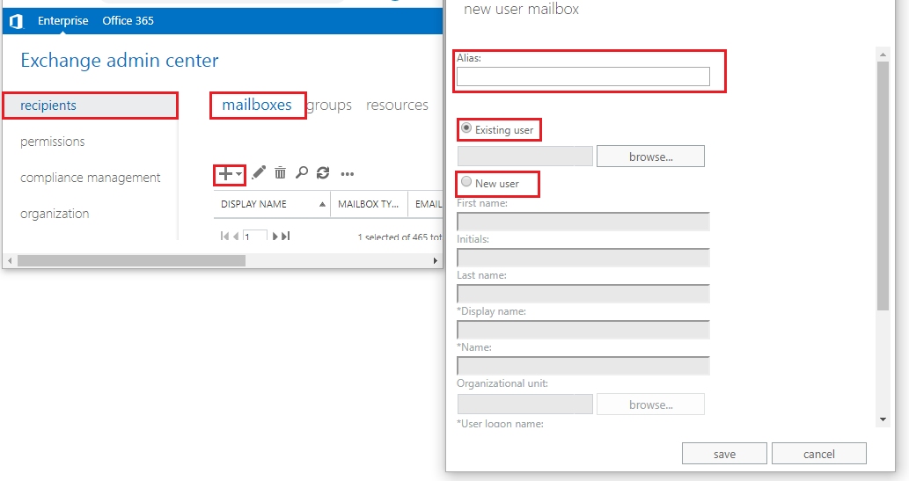
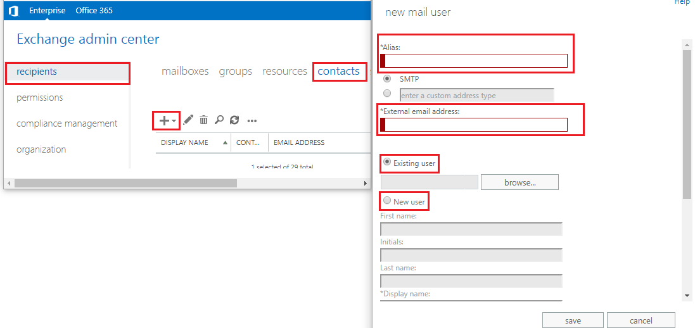
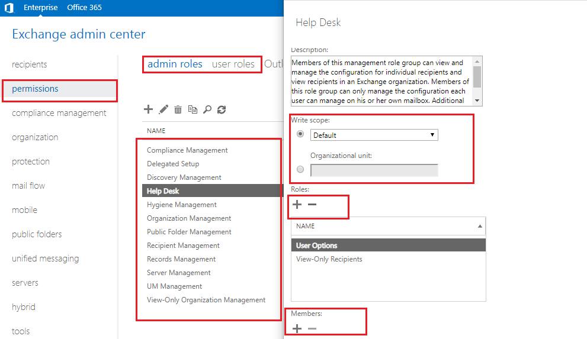
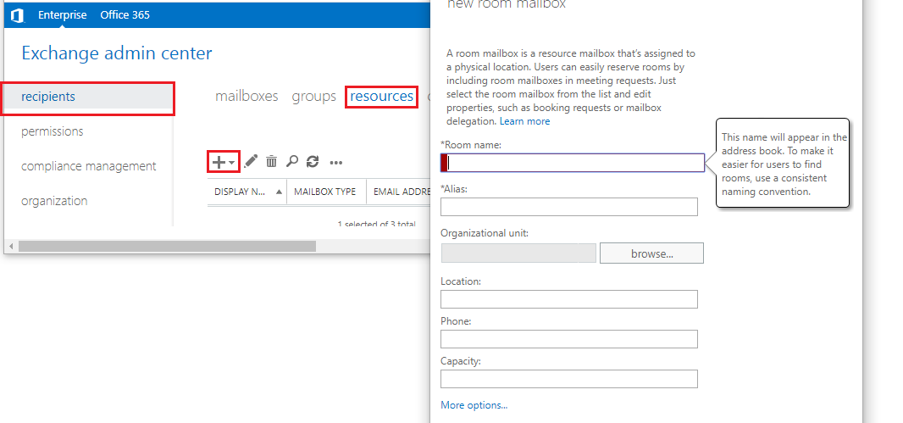
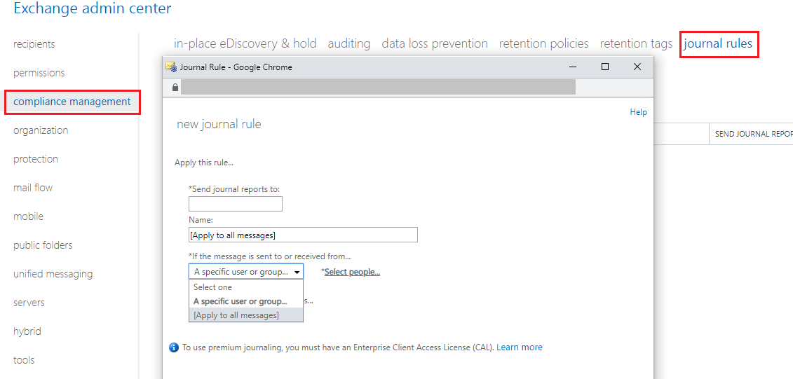
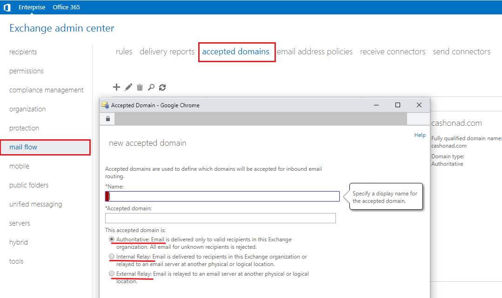
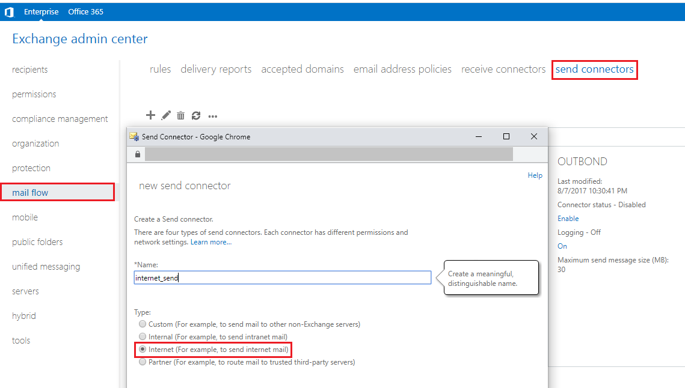
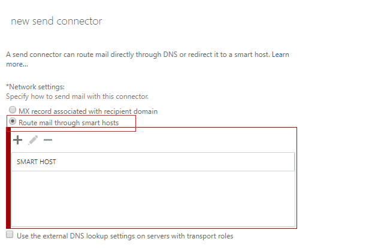
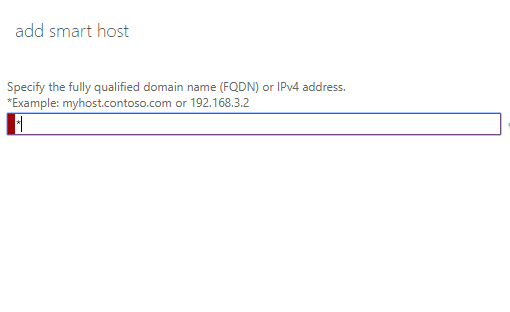

Exchange
Microsoft Exchange is Microsoft’s mail server and calendaring. It runs on Windows Server operating systems and need Active directory domain service, DNS and Internet Information Service. The exchange 2013 is 64bit and comes in two editions. Standard edition which limits to five mounted database where as enterprise enable up to 500 mounted database. Microsoft release cumulative update of exchange server in every three months. Basically, it provides two roles, mail box server and client access server role.
Let us discuss its important terminologies and their uses.
Mailbox enabled user
They are the users having account in Active Directory (AD) and also having mail box who can send and receive email. You can create mailbox user from Exchange control panel (ecp). Goto reception > mailbox > + > user mailbox. Then give user email id, you can add a new user of provide mailbox to existing user from Active directory also.

Mail enabled user
They are the users only having account in Active Directory (AD) and need external mail box to send and receive email. Such type of user are created for vender, stake holder of the organization. Goto reception > contacts > + > Mail user. Then give user external email id, you can add a new user of provide mailbox to existing user from Active directory also. But these user will not have storage for email (mailbox) here.

Rule Based access control
Rule Based access control (RBAC) are the rules that defines who can access what. Assigning a user to view audit log or generating reports, enabling admin user to create and modify mailbox are the example of rule based access control.

Visiting to Permission tab, you can create access control rules. These rules can be applied for admin or users. Select of add rules and configure it. You need to assign roles and members for specific rules set.
Room Mail Box
A room mailbox is a resource mailbox that’s assigned to a physical location, such as a conference room, an auditorium, or a training room. With room mailboxes, users can easily reserve these rooms by including room mailboxes in their meeting requests.

Goto reception > resources > + > Room mailbox. Give Room name, organizational unit who can book and use the room. Also provide location, phone and capacity of the room.
Journaling
A method that perform backup and logging of all copies of email sent to or from specific users. Even if a email is deleted, journaling system has access to the original content.

To set journal rule, you need to go to compliance management and choose journal tab. Put email address in the box send journal report to which you want to receive email. Give a name and specify either to choose a specific group or all the messages. You need premium license to journal all the emails.
Accepted Domain
Accepted domains is an SMTP namespace that the Exchange organization can send and receive email for.

You can see in above description of what authoritative, internal and external relay is for.
Connectors
Connector is like next hub for email to send from exchange. It is of two types send connector and receive connector. When you first install exchange, you need to configure send connector to send email to the public domain.
To create send connector, Go to mail flow > send connector > + . Give Suitable name and choose Internet. Click on Next.

Choose Route mail through smart host and click on Next.

Enter * and click on Save.

Global Catalog Server
Global catalog server are important component of Active Directory service. It provides other services like Exchange to search for and locate objects from any domain in the forest. In your domain of servers, first domain controller will be auto assigned as Global Catalog server. At the time of authentication, identify of domain is provided by GC server. Exchange depends on Catalog server for email lookup and other email data. So, there must be one GC server for the operation of Exchange.
Exchange Active Sync
Exchange ActiveSync is an Exchange synchronization protocol based on HTTP and XML, lets mobile phones access an organization’s information on a server that’s running Microsoft Exchange. Exchange ActiveSync lets mobile phone users access their email, calendar, contacts, and tasks, and lets them continue to access this information when they’re working offline.
Important Command
Use Exchange Management Shell to execute following commands.
Get Exchange information
Get-ExchangeServer | Format-List
Get first 30 mail box which are occupying maximum storage
Get-Mailbox -ResultSize Unlimited | Get-MailboxStatistics | Sort-Object TotalItemSize -Descending | Select-Object DisplayName,TotalItemSize -First 30
Get internal and external URL
Get-ECPvirtualDirectory | Format-List Name, InternalURL, ExternalURL
Get server componets states
Get-ServerComponentState -Identity MX-04
Restart ImapProxy service / Set the ImapProxy state to active
Set-ServerComponentState -Identity MX-04 -Component ImapProxy -Requester HealthAPI -State Active
Set the PopProxy state to active / Restart ImapProxy service
Set-ServerComponentState -Identity MX-04 -Component PopProxy -Requester HealthAPI -State Active
Backup deleted email. By default deleted mailbox is stored for 14 days.
Use the Get-MailboxStatistics cmdlet to display the values of the DisplayName, MailboxGuid, and LegacyDN properties for the deleted mailbox that you want to restore.
$dbs = Get-MailboxDatabase
$dbs | foreach {Get-MailboxStatistics -Database $_.DistinguishedName} | where {$_.DisconnectReason -eq "Disabled"} | Format-Table DisplayName,MailboxGuid,Database,DisconnectDate
Now use following command and input SourceStoreMailbox and SourceDatabase from the result you just get.
New-MailboxRestoreRequest -SourceStoreMailbox af5c3f96-d3df-4271-88c4-4818d7ca0bef -SourceDatabase 0702033906 -TargetMailbox "Firstname lastname" -AllowLegacyDNMismatch
Pratik Gautam pratikgautm@gmail.com